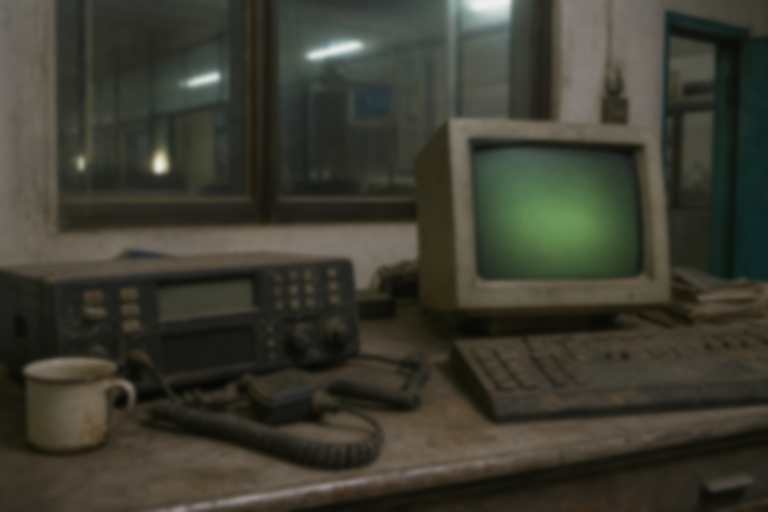

容量早满 只扒下与名册有关的两封
劳资信箱二〇一四年停用。县志办镜像留下请假扫描和一张送货回执。复工改期那封被矿长办删过，标题还在，正文不在。
假条证明宁广福当天不在井口。回执证明葛万才的车在县城建材卸砖。两封都不是抚恤，也不是碑文。调度室那台积灰的电台照片只说明矿办还留着地面物件，不能当曲培义的人证；人证在他自己的帖和地面岗表。删掉的复工改期邮件，标题能对上安监那封函，正文没有了，不必在信箱里猜矿长原话。

旧邮箱只读 35/39